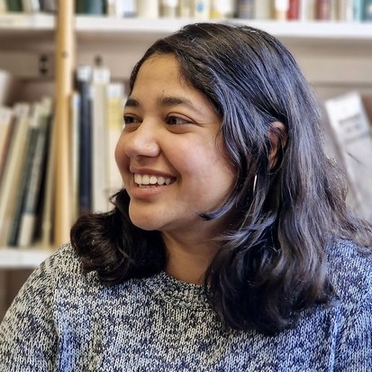

People
The founders, the scientific team and the colleagues we work with.
The founders


The scientific team




Collaborators on current projects
Deep-C
- Christian TamburiniMediterranean Institute of Oceanography (MIO), France
- Marc GarelMediterranean Institute of Oceanography (MIO), France
- Ronnie N. GludUniversity of Southern Denmark, Denmark
- Peter StiefUniversity of Southern Denmark, Denmark
- Dustin CarrollSan José State University, USA
MANGO
- Malick ThiamUniversité Cheikh Anta Diop (UCAD), Senegal
- Amadou Thierno GayeUniversité Cheikh Anta Diop (UCAD), Senegal
- Ibrahima CamaraUniversité Cheikh Anta Diop (UCAD), Senegal
- Eric MachuIRD & LOPS, France
DYNAMITE
- Deborah Wall-PalmerNaturalis Biodiversity Center, Netherlands
- Katja PeijnenburgUniversity of Amsterdam & Naturalis Biodiversity Center, Netherlands
- Fabio BenedettiETH Zurich, Switzerland
- Nina BednaršekOregon State University, CIMERS, USA / Slovenia
- Ralf SchiebelMax Planck Institute for Chemistry, Germany
- Mark OhmanScripps Institution of Oceanography, UC San Diego, USA
- Clara MannoBritish Antarctic Survey, UK
ForCry
- Christopher StandishUniversity of Southampton, UK
PhD co-supervision
- Steeve ComeauLaboratoire d'Océanographie de Villefranche (LOV), France